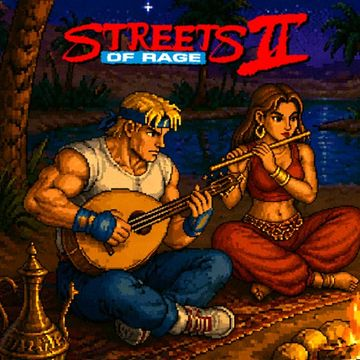
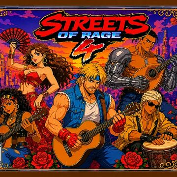

Streets of Rage - Symphony
Symphonic orchestral arrangements of the music from Streets of Rage, the 1991 Sega Genesis brawler. 14 tracks with 20-second previews.
Get this album- 1The Street of Rage
- 2Player Select
- 3Fighting in the Street
- 4Dilapidated Town
- 5Moon Beach
- 6Keep the Groovin
- 7Beatnik on the Ship
- 8Stealthy Steps
- 9Violent Breathing
- 10The Last Soul
- 11Attack the Barbarian
- 12Big Boss
- 13You Became the Bad Guy
- 14Good Ending
Related
 Streets of Rage 1+2 Symphony CollectionBundle of 2 albums
Streets of Rage 1+2 Symphony CollectionBundle of 2 albums Streets of Rage - Arabian Spanish FusionArabian, 14 tracksStreets of Rage 1, 2 & 3 - The Complete Arabian Spanish Fusion TrilogyBundle of 3 albums
Streets of Rage - Arabian Spanish FusionArabian, 14 tracksStreets of Rage 1, 2 & 3 - The Complete Arabian Spanish Fusion TrilogyBundle of 3 albums
Streets of Rage 2 - Arabian Spanish FusionArabian, 18 tracks Streets of Rage 3 - Arabian Spanish FusionArabian, 17 tracks
Streets of Rage 3 - Arabian Spanish FusionArabian, 17 tracks
Streets of Rage 4 - Arabian RemixArabian, 33 tracks Streets of Rage 2 - SymphonySymphony, 20 tracks
Streets of Rage 2 - SymphonySymphony, 20 tracks